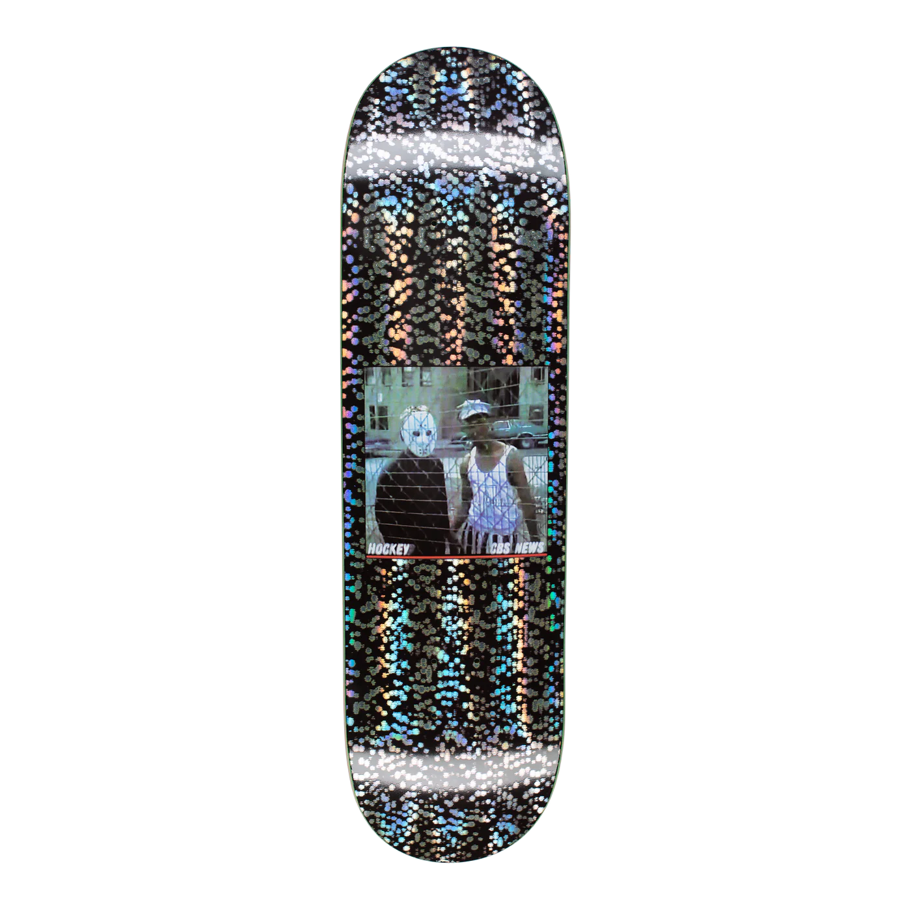
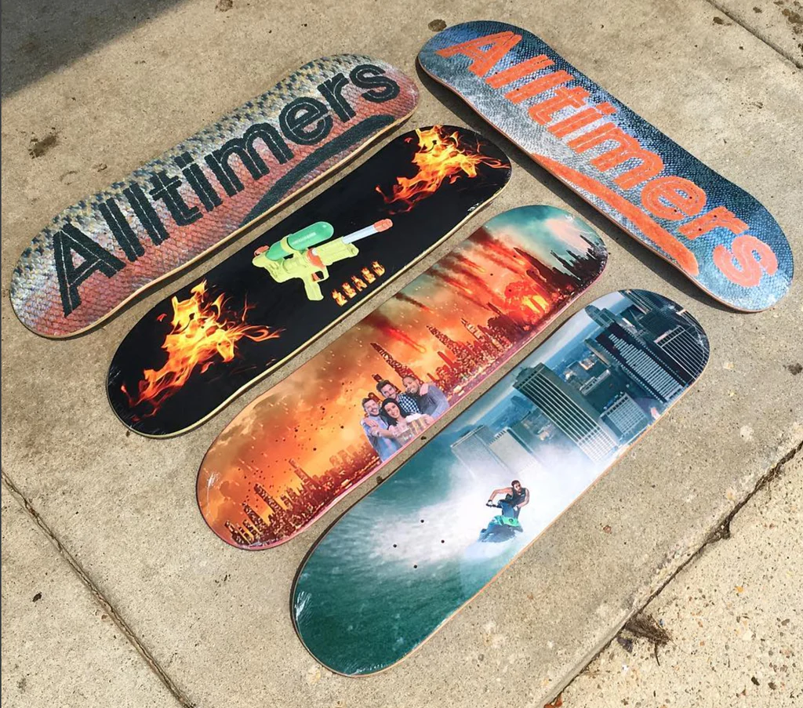
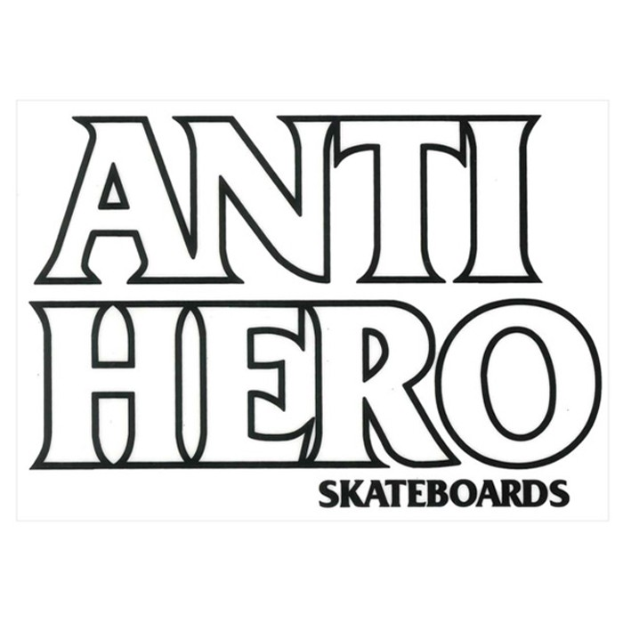
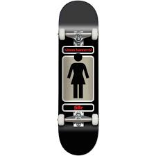

How to build a Skateboard! (The Basics) by: Haiden Cramer


You must purchase the following items beforehand:
Skateboard Deck
Grip Tape for the Skateboard Deck
Pair of Skateboard Trucks
Pack of Skateboard Wheels
Skateboard Wheel Bearings
Hardware for skateboard (i.e Screws and bolts for skateboard trucks)
You may want to purchase the following tools/equipment as well:
Box cutter knife
Skateboard tool
Safety Gloves
Workbench or Workspace
Screwdriver
Begin Putting Everything Together
Directions:
- Start by taking your new Skateboard Deck and try lining the griptape up over the top side of your Deck
- After lining griptape up with your skateboard deck try your hardest to set it on top of the Deck while making sure you leave no air bubbles underneath the grip tape
- After the griptape is securely set on Deck take a screwdriver and rub it around the outside of your deck against the griptape. This will create a white line around the board making it easier to cut your griptape
- This where safety gloves come in handy! Now that you have made a line around your deck on the griptape you can cut your griptape off.
- After your griptape is finished you can start putting your wheels and trucks together!
- For your wheels you're gonna want to take your pack of bearings and put two in each of the four wheels with the bearings logo sticking outward. Make sure not to get them wet or they will rust!
- After the bearings are put into your wheels you can use your skatetool to put the wheels on your trucks. Make sure not to tighten the wheels too much otherwise they wont spin and it will ruin your bearings because of the pressure of the nuts.
- Take your hardware (screws) or a screwdriver and carefully poke 4 holes from the bottom of your deck through the top of your griptape. Be careful not to press too hard or you will ruin your grip job.
- After you created the holes You can now attach your trucks with your hardware. Make sure that the top largest nut (kingpin) faces inward from the tail and nose of your skateboard deck. If you fail to do so, your skateboard will not ride correctly
- After you have finished putting the hardware in the holes you created your skateboard is now complete!! Be safe and mindful of others while riding and wear a helment to protect your head!
Completed Board will look like:
